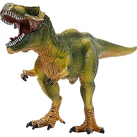

Dinosaurs are a varied group of animals from taxonomic, morphological and ecological standpoints. Using fossil evidence, paleontologists have identified over 500 distinct genera and more than 1,000 different species of non-avian dinosaurs. Dinosaurs are represented on every continent by both extant species (birds) and fossil remains. Through the first half of the 20th century, before birds were recognized to be dinosaurs, most of the scientific community believed dinosaurs to have been sluggish and cold-blooded.